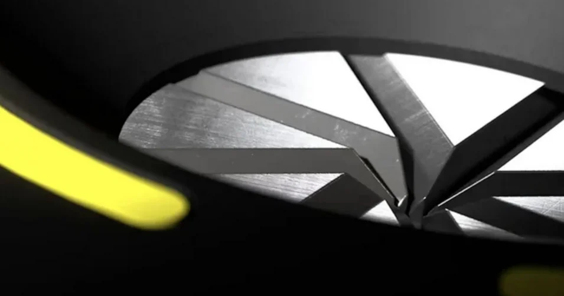

Technique de rétrécissement : ses avantages
Découvrez comment nous avons obtenu ces gains considérables en matière d'efficacité énergétique, de vitesse de traitement et d'ergonomie. Utilisez la perfection pour votre production.
En savoir plus